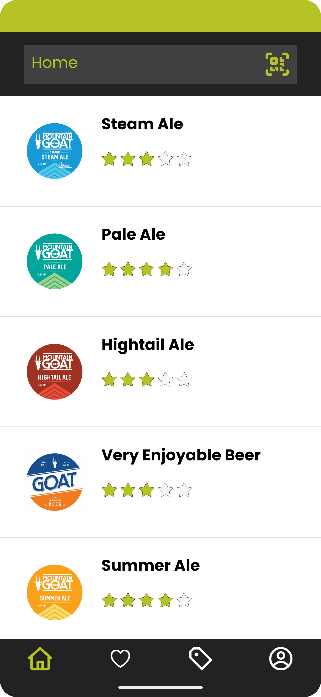
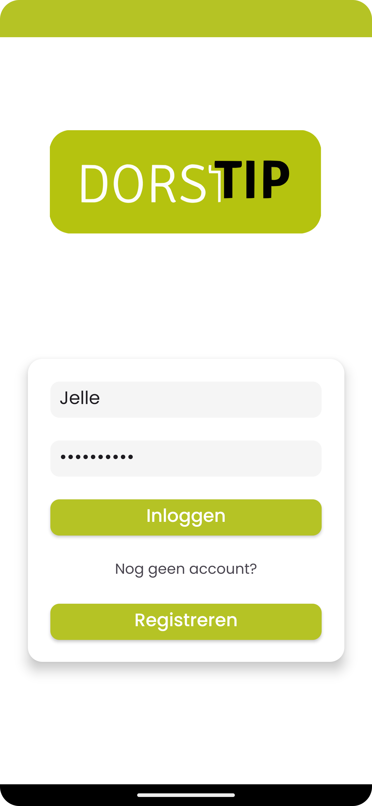
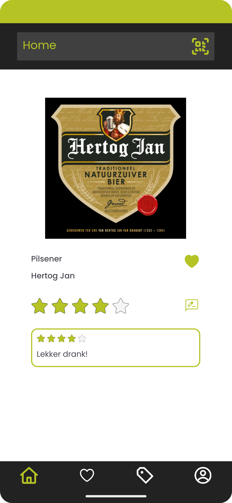
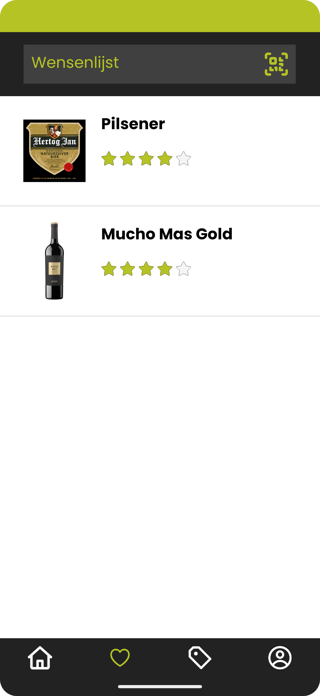

<!-- <!DOCTYPE html>
<html lang="nl">
    <head>
        <meta charset="UTF-8" />
        <meta name="viewport" content="width=device-width, initial-scale=1.0" />
        <title>Dranken Applicatie</title>
        <link rel="icon" type="image/png" href="../img/favicon.ico" />
        <link rel="stylesheet" href="../css/project.css" />
    </head>

    <body>
        <div class="top">
            <h1>Dranken Applicatie - Kotlin, XML</h1>
            <a href="../index.html" class="close-button">Terug</a>
        </div>

        <div class="description">
            <p>
                De Dorstip Android Applicatie is een mobiele app ontworpen om
                gebruikers te helpen hun favoriete dranken te ontdekken,
                verkennen en beheren. Met deze applicatie kunnen gebruikers een
                breed scala aan dranken verkennen, hun eigen beoordelingen en
                waarderingen toevoegen.
            </p>
        </div>

        <div class="image-container-vertical">
            
            
            
            
        </div>

        <div class="content-container">
            <div class="details">
                <h2>Functionaliteiten:</h2>
                <ul>
                    <li>
                        <strong>Inloggen en Registreren</strong>: Veilig
                        inloggen of een nieuw account aanmaken om toegang te
                        krijgen tot functies zoals het toevoegen van
                        beoordelingen en het leuk vinden van dranken.
                    </li>
                    <li>
                        <strong>Home</strong>: Ontdek een samengestelde lijst
                        van dranken, opgehaald via een API, en selecteer een
                        drank om de details te bekijken of deze leuk te vinden.
                    </li>
                    <li>
                        <strong>Drinkdetails</strong>: Bekijk uitgebreide
                        informatie over een specifieke drank, inclusief naam,
                        beschrijving, afbeelding en gebruikersbeoordelingen.
                    </li>
                    <li>
                        <strong>Toevoegen van Beoordelingen</strong>: Deel je
                        mening over een drank door beoordelingen en waarderingen
                        toe te voegen.
                    </li>
                    <li>
                        <strong>Likes</strong>: Geef je favoriete dranken een
                        like om ze bij te houden en je voorkeuren met andere
                        gebruikers te delen.
                    </li>
                </ul>
            </div>

            <div class="details">
                <h2>Technische Details:</h2>
                <ul>
                    <li>
                        <strong>Frontend</strong>: Ontwikkeld met Android Studio
                        en Kotlin, gericht op een gebruiksvriendelijke mobiele
                        ervaring.
                    </li>
                    <li>
                        <strong>Backend</strong>: De applicatie maakt gebruik
                        van een API om drankinformatie op te halen, evenals een
                        database voor het opslaan van gebruikersreferenties,
                        beoordelingen en likes.
                    </li>
                    <li>
                        <strong>Stijlen</strong>: De applicatie maakt gebruik
                        van moderne designprincipes om een intuïtieve
                        gebruikersinterface te bieden.
                    </li>
                </ul>
            </div>
        </div>
    </body>
</html> -->
